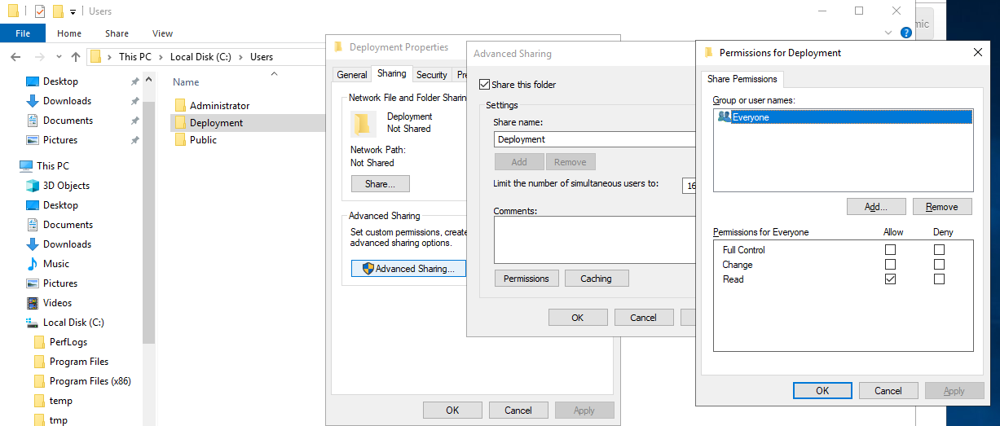
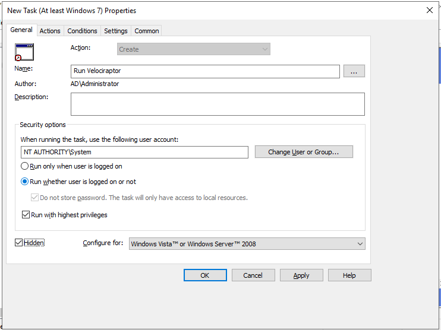

Agentless hunting with Velociraptor
There has been a lot of interest lately in Agentless hunting especially using PowerShell. There are many reasons why Agentless hunting is appealing - there are already a ton of endpoint agents and yet another one may not be welcome. Somtimes we need to deploy endpoint agents as part of a DFIR engagement and we may not want to permanently install yet another agent on end points.
This blog post explores an agentless deployment scenario, where we do not want to install Velociraptor permanently on the end point, but rather push it to end points temporarily to collect specific artifacts. The advantage of this method is that there are no permanent changes to the end point, as nothing is actually installed. However, we do get the full power of Velociraptor to collect artifacts, hunt for evil and more...
Agentless Velociraptor
Normally when deploying Velociraptor as a service, the binary is copied to the system and a service is installed. The service ensures that the binary is restarted when the system reboots, and so Velociraptor is installed on a permanent basis.
However in the agentless deployment scenario we simply run the binary from a network share using group policy settings. The downside to this approach is that the endpoint needs to be on the domain network to receive the group policy update (and have the network share accessible) before it can run Velociraptor. When we run in Agentless mode we are really after collecting a bunch of artifacts via hunts and then exiting - the agent will not restart after a reboot. So this method is suitable for quick hunts on corporate (non roaming) assets.
In this post I will use Windows 2019 Server but this should also work on any older version.
Creating a network share
The first step is to create a network share with the Velociraptor binary and its configuration file. We will run the binary from the share in this example, but for more reliability you may want to copy the binary into e.g. a temp folder on the end point in case the system becomes disconnected from the domain. For quick hunts though it should be fine.
We create a directory on the server (I will create it on the domain controller but you should probably not do that - find another machine to host the share).
I created a directory C:\Users\Deployment and ensured that it is read only. I have shared the directory as the name Deployment.
I now place the Velociraptor executable and client config file in that directory and verify that I can run the binary from the network share. The binary should be accessible via \\\\DC\Deployment\velociraptor.exe:

Creating the group policy object.
Next we create the group policy object which forces all domain connected machines to run the Velociraptor client. We use the Group Policy Management Console:

Select the OU or the entire domain and click "Create New GPO":

Now right click the GPO object and select "Edit":

We will create a new scheduled task. Rather than schedule it at a particular time, we will select to run it immediately. This will force the command to run as soon as the endpoint updates its group policy settings (i.e. we do not want to wait for the next reboot of the endpoint).

Next we give the task a name and a description. In order to allow Velociraptor to access raw devices (e.g. to collect memory or NTFS artifacts) we can specify that the client will run at NT_AUTHORITY\SYSTEM privileges, and run without any user being logged on. It is also worth ticking the "hidden" checkbox here to prevent a console box from appearing.
Next click the Actions tab and add a new action. This is where we launch the Velociraptor client. The program will simply be launched from the share (i.e. \\\\DC\Deployment\velociraptor.exe) and we give it the arguments allowing it to read the provided configuration file (i.e. --config \\\\DC\Deployment\client.config.yaml client -v).

In the setting tab we can control how long we want the client to run. For a quick hunt this may be an hour or two but maybe for a DFIR engagement it might be a few days. The GPO will ensure the client is killed after the allotted time.

Once the GPO is installed it becomes active for all domain machines. You can now schedule any hunts you wish using the Velociraptor GUI. When a domain machine refreshes its group policy it will run the client, which will enroll and immediately participate in any outstanding hunts - thus collecting and delivering its artifacts to the server. After the allotted time has passed, the client will shut down without having installed anything on the endpoint.
You can force a group policy update by running the gpupdate program. Now you can verify that Velociraptor is running:

Persistence
Note that when running Velociraptor in agent less mode you probably want to configure it so that the writeback file is written to the temp directory. The writeback file is how the client keeps track of its key material (and identity). The default is to store it in the client's installation folder, but you should probably change it in the client's config file:
Client: writeback_windows: $TEMP\\velociraptor.writeback.yaml
The file will remain in the client's temp directory so if you ever decide to run the agentless client again (by pushing another group policy) the client id remains the same.